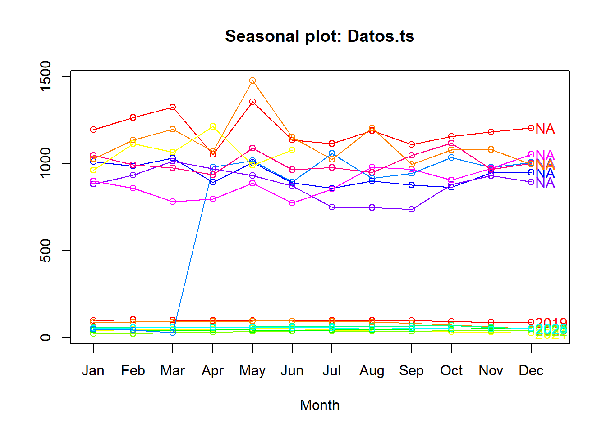

2 Actividad 2 - Propuesta avance 2
Evidenciar, en una de las variables en el tiempo, la aproximación en promedio móvil, en rezagos y en estacionalidad. Todo lo anterior, a través de funciones y gráficas que permitan detectar patrones y ciclos de la variable.
## Warning: package 'forecast' was built under R version 4.3.3## Registered S3 method overwritten by 'quantmod':
## method from
## as.zoo.data.frame zoo## Warning: package 'tseries' was built under R version 4.3.3## Warning: package 'ggplot2' was built under R version 4.3.3## Warning: package 'changepoint' was built under R version 4.3.3## Loading required package: zoo## Warning: package 'zoo' was built under R version 4.3.3##
## Attaching package: 'zoo'## The following objects are masked from 'package:base':
##
## as.Date, as.Date.numeric## Successfully loaded changepoint package version 2.2.4
## See NEWS for details of changes.## Warning: package 'readxl' was built under R version 4.3.3library(readxl)
DATOSST <- read_excel("C:/Users/ALVARO ARIZA/Desktop/Maestria Javeriana/PROYECTO APLICADO III/DATOS ESTRUCTURADOS POR HORA PROYECTO BOGOTA/CENTRO DE ALTO RENDIMIENTO/DATOSST.xlsx")
View(DATOSST)## Precio Exportaciones
## Jan 2019 97.98278 980.8128
## Feb 2019 103.35294 1016.6572
## Mar 2019 100.77090 893.4956
## Apr 2019 97.75538 1057.0875
## May 2019 97.90686 914.6077
## Jun 2019 96.99315 943.7099
## Jul 2019 99.67255 1033.8571
## Aug 2019 99.24414 977.7406
## Sep 2019 98.14572 1007.0700
## Oct 2019 93.87329 1011.7472
## Nov 2019 88.48590 984.7709
## Dec 2019 89.40966 1031.8087
## Jan 2020 88.31081 893.0505
## Feb 2020 90.82224 1005.5936
## Mar 2020 91.39522 890.6116
## Apr 2020 93.88863 858.8093
## May 2020 95.08631 900.7373
## Jun 2020 97.01105 877.4955
## Jul 2020 93.32017 863.5452
## Aug 2020 89.50745 946.0628
## Sep 2020 84.12824 949.0946
## Oct 2020 72.50936 882.7212
## Nov 2020 63.47980 934.6265
## Dec 2020 50.18138 1012.5247
## Jan 2021 40.45127 970.9621
## Feb 2021 45.98606 930.4431
## Mar 2021 46.01733 871.8023
## Apr 2021 49.32555 750.1818
## May 2021 52.03910 748.3895
## Jun 2021 52.82573 735.7843
## Jul 2021 45.16595 879.7783
## Aug 2021 38.41927 931.2851
## Sep 2021 36.29036 895.4856
## Oct 2021 34.86077 899.8572
## Nov 2021 32.50883 857.3915
## Dec 2021 26.19610 780.8092
## Jan 2022 23.10238 796.7651
## Feb 2022 23.72933 886.6428
## Mar 2022 28.32656 774.4293
## Apr 2022 31.33582 853.7166
## May 2022 36.72636 980.1193
## Jun 2022 39.80715 967.6453
## Jul 2022 37.97153 904.3905
## Aug 2022 37.74090 973.4510
## Sep 2022 36.82666 1052.1847
## Oct 2022 40.66836 1046.4826
## Nov 2022 38.36162 993.6913
## Dec 2022 42.32596 975.4781
## Jan 2023 44.50008 936.8024
## Feb 2023 44.17497 1088.6730
## Mar 2023 41.93243 965.0702
## Apr 2023 43.22118 976.3228
## May 2023 43.85074 950.1525
## Jun 2023 41.15105 1046.2386
## Jul 2023 43.87771 1117.7205
## Aug 2023 45.55484 967.4410
## Sep 2023 48.16237 1000.4794
## Oct 2023 48.89114 1195.7028
## Nov 2023 53.34505 1264.6378
## Dec 2023 54.05576 1322.8053
## Jan 2024 57.45399 1051.3040
## Feb 2024 56.15676 1354.4276
## Mar 2024 57.22458 1136.2008
## Apr 2024 58.15973 1114.5576
## May 2024 62.89929 1189.2718
## Jun 2024 64.63686 1109.7930
## Jul 2024 66.42162 1155.8421
## Aug 2024 64.26567 1181.0645
## Sep 2024 68.36348 1205.8530
## Oct 2024 71.15330 1026.6360
## Nov 2024 59.82583 1134.6351
## Dec 2024 51.86867 1198.1957
## Jan 2025 54.05666 1071.4520
## Feb 2025 57.37981 1475.2783
## Mar 2025 59.46449 1150.2987
## Apr 2025 62.07703 1023.4217
## May 2025 60.33674 1204.6957
## Jun 2025 56.90537 995.0349
## Jul 2025 57.87580 1078.6825
## Aug 2025 49.58496 1081.3750
## Sep 2025 55.05522 994.5735
## Oct 2025 51.00463 963.0636
## Nov 2025 50.68969 1114.4386
## Dec 2025 54.54901 1066.4297
## Jan 2026 49.79299 1212.2405
## Feb 2026 44.63505 990.4275
## Mar 2026 28.92302 1079.1894plot(Datos.ts, main=" ", ylab="Valor", col="deepskyblue", xlab="Date")
title(main = "DATOS PRECIOS")